Last updated: 2022-01-23
Checks: 7 0
Knit directory: fiveMinuteStats/analysis/
This reproducible R Markdown analysis was created with workflowr (version 1.6.2). The Checks tab describes the reproducibility checks that were applied when the results were created. The Past versions tab lists the development history.
Great! Since the R Markdown file has been committed to the Git repository, you know the exact version of the code that produced these results.
Great job! The global environment was empty. Objects defined in the global environment can affect the analysis in your R Markdown file in unknown ways. For reproduciblity it’s best to always run the code in an empty environment.
The command set.seed(12345) was run prior to running the code in the R Markdown file. Setting a seed ensures that any results that rely on randomness, e.g. subsampling or permutations, are reproducible.
Great job! Recording the operating system, R version, and package versions is critical for reproducibility.
Nice! There were no cached chunks for this analysis, so you can be confident that you successfully produced the results during this run.
Great job! Using relative paths to the files within your workflowr project makes it easier to run your code on other machines.
Great! You are using Git for version control. Tracking code development and connecting the code version to the results is critical for reproducibility.
The results in this page were generated with repository version b97512b. See the Past versions tab to see a history of the changes made to the R Markdown and HTML files.
Note that you need to be careful to ensure that all relevant files for the analysis have been committed to Git prior to generating the results (you can use wflow_publish or wflow_git_commit). workflowr only checks the R Markdown file, but you know if there are other scripts or data files that it depends on. Below is the status of the Git repository when the results were generated:
Ignored files:
Ignored: .Rhistory
Ignored: .Rproj.user/
Untracked files:
Untracked: texput.log
Note that any generated files, e.g. HTML, png, CSS, etc., are not included in this status report because it is ok for generated content to have uncommitted changes.
These are the previous versions of the repository in which changes were made to the R Markdown (analysis/HW2_Bayesian_inference_mixture_models.Rmd) and HTML (docs/HW2_Bayesian_inference_mixture_models.html) files. If you’ve configured a remote Git repository (see ?wflow_git_remote), click on the hyperlinks in the table below to view the files as they were in that past version.
| File | Version | Author | Date | Message |
|---|---|---|---|---|
| Rmd | b97512b | Kiseok Lee | 2022-01-23 | wflow_publish(“analysis/HW2_Bayesian_inference_mixture_models.Rmd”) |
| html | 46cfa0a | Kiseok Lee | 2022-01-22 | Build site. |
| Rmd | a2deeb7 | Kiseok Lee | 2022-01-22 | wflow_publish(“analysis/HW2_Bayesian_inference_mixture_models.Rmd”) |
Name: Kiseok Lee
Date: 1/22/22
Class: HGEN 486 Computational Biology
# plot gamma distribution
shape = 12
scale = 1/9
# define x-values
x <- seq(0, 3, by = 0.01)
# calculate gamma density for each
# x-value
y <- dgamma(x, shape = 12, scale = 1/9)
# create density plot
plot(x, y, type = "l", col = "blue", xlab = "x",
ylab = "density", main = "Gamma density function (k=12, theta=1/9)")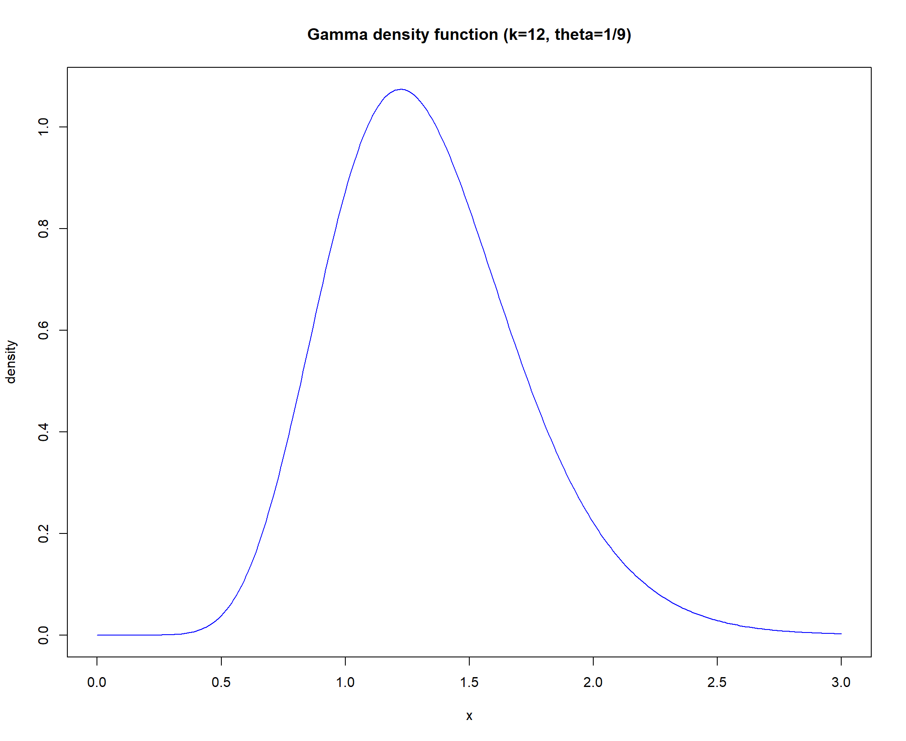
require(pracma)
trapz(x, y) # area sum to 1[1] 0.9995737# posterior median
qgamma(0.5, shape = 12, scale = 1/9)[1] 1.296485# 90% credible interval
lower = qgamma(0.05, shape = 12, scale = 1/9)
lower[1] 0.7693569upper = qgamma(0.95, shape = 12, scale = 1/9)
upper[1] 2.023057plot(x, y, type = "l", col = "blue", xlab = "x",
ylab = "density", main = "90% credibility interval")
abline(v = lower, col = "red")
abline(v = upper, col = "red")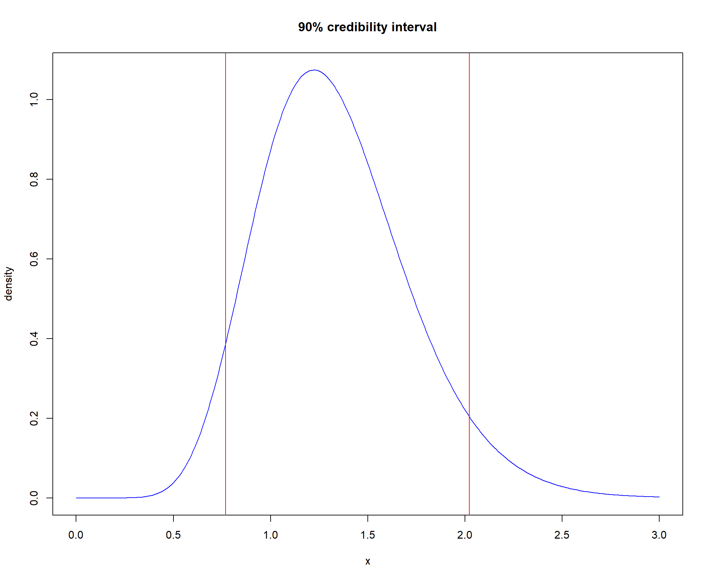
Write an R function to simulate genetic data on (haploid) tusks from a mixture distribution: that is, sampled from a population in which each tusk comes from one of K populations.
reference1: https://stephens999.github.io/fiveMinuteStats/mixture_models_01.html
reference2: https://stephens999.github.io/fiveMinuteStats/likelihood_ratio_simple_models.html
First let’s build the components of the function.
# Input
#' @param N number of tusks to simulate
#' @param vec_w vector of mixture proportions, a non-negative vector of lenght K that sums to 1.
#' @param M number of markers
#' @param mat_F K by M matrix, F, of allele frequencies
# Output
#' @param vec_z # Z vector of component memberships
#' @param mat_X # N by M matrix of simulated data
# 2 step process
N = 1000 # number of tusks to simulate
M = 6 # number of markers
vec_w = c(0.25, 0.75) # c(savannah, Forest population)
mat_F = rbind(c(0.4, 0.12, 0.21, 0.12, 0.02,
0.32), c(0.8, 0.2, 0.11, 0.17, 0.23,
0.25)) # K by M matrix, F, of allele frequencies
mat_F[1, ] # savannah allele frequencies[1] 0.40 0.12 0.21 0.12 0.02 0.32mat_F[2, ] # forest allele frequencies[1] 0.80 0.20 0.11 0.17 0.23 0.25# output setting
vec_z = rep(-1, N) # Z vector of component memberships
length(vec_z)[1] 1000mat_X = matrix(NA, nrow = N, ncol = 6) # N by M matrix of simulated data
dim(mat_X)[1] 1000 6# simulating data
for (i in 1:N) {
# print(paste0('i: ',i)) generate
# latent variable Z in the first
# step
if (runif(1) < 0.25) {
vec_z[i] = 0 # z = 0 is savannah, z = 1, is forest
# print(vec_z[i])
mat_X[i, ] = rbinom(M, rep(1, M),
mat_F[1, ]) # simulate genotype
# print(mat_X[i,])
} else {
vec_z[i] = 1 # z = 0 is savannah, z = 1, is forest
# print(vec_z[i])
mat_X[i, ] = rbinom(M, rep(1, M),
mat_F[2, ]) # simulate genotype
# print(mat_X[i,])
}
}
# confirm that I simulated right
mean(vec_z)[1] 0.754colMeans(mat_X[vec_z == 0, ]) - mat_F[1,
] # similar[1] -0.034146341 -0.006178862 -0.006747967 -0.010243902 0.012520325
[6] -0.039512195colMeans(mat_X[vec_z == 1, ]) - mat_F[2,
] # similar[1] 0.006366048 -0.003713528 -0.005225464 -0.022785146 0.011379310
[6] 0.020557029Wrap it into a function
## Wrapping into a function
# Input
#' @param N number of tusks to simulate
#' @param vec_w vector of mixture proportions, a non-negative vector of lenght K that sums to 1.
#' @param M number of markers
#' @param mat_F K by M matrix, F, of allele frequencies
# Output
#' @param vec_z # Z vector of component memberships
#' @param mat_X # N by M matrix of simulated data
simulate_data <- function(N, vec_w, M, mat_F) {
# output setting
vec_z = rep(-1, N) # Z vector of component memberships
length(vec_z)
mat_X = matrix(NA, nrow = N, ncol = 6) # N by M matrix of simulated data
dim(mat_X)
# simulating data
for (i in 1:N) {
# print(paste0('i: ',i))
# generate latent variable Z in
# the first step
if (runif(1) < 0.25) {
vec_z[i] = 0 # z = 0 is savannah, z = 1, is forest
# print(vec_z[i])
mat_X[i, ] = rbinom(M, rep(1,
M), mat_F[1, ]) # simulate genotype
# print(mat_X[i,])
} else {
vec_z[i] = 1 # z = 0 is savannah, z = 1, is forest
# print(vec_z[i])
mat_X[i, ] = rbinom(M, rep(1,
M), mat_F[2, ]) # simulate genotype
# print(mat_X[i,])
}
}
out_list = list(Component_membership = vec_z,
Simulated_data = mat_X)
return(out_list)
}
# example
N = 1000 # number of tusks to simulate
M = 6 # number of markers
vec_w = c(0.25, 0.75) # c(savannah, Forest population)
mat_F = rbind(c(0.4, 0.12, 0.21, 0.12, 0.02,
0.32), c(0.8, 0.2, 0.11, 0.17, 0.23,
0.25)) # K by M matrix, F, of allele frequencies
output_list <- simulate_data(N = N, vec_w = vec_w,
M = M, mat_F = mat_F)
output_list$Component_membership [1] 1 1 1 1 1 1 1 1 0 1 1 1 1 1 0 1 0 1 0 1 1 1 1 1 1 1 1 0 1 0 1 0 1 0 1 0 0
[38] 0 1 0 1 1 0 1 1 1 1 1 0 1 1 1 0 0 1 1 1 0 1 0 1 1 1 1 1 1 1 1 1 1 1 1 1 0
[75] 0 1 1 1 1 1 0 0 0 0 1 1 1 1 1 1 1 1 1 0 1 1 1 1 1 1 1 1 1 1 0 0 1 0 1 1 1
[112] 1 1 1 1 1 0 1 0 0 1 1 1 0 1 1 1 1 1 1 1 1 1 1 0 0 1 0 0 1 1 0 1 1 0 1 1 1
[149] 0 1 1 1 1 0 1 0 1 0 1 1 1 1 0 1 1 1 1 1 1 1 1 0 1 1 1 1 1 1 1 1 0 1 1 1 1
[186] 1 1 1 1 1 1 1 1 1 1 1 1 1 1 1 1 1 0 1 0 0 1 0 0 1 0 1 1 0 1 1 1 1 0 1 1 1
[223] 1 0 0 1 1 1 1 0 0 1 1 0 1 1 1 0 0 1 1 1 1 1 1 1 1 0 1 0 1 1 1 1 0 0 0 1 1
[260] 1 1 1 0 0 0 0 1 1 1 0 0 1 1 1 1 1 0 1 1 1 1 0 1 1 1 1 0 0 1 1 1 0 1 1 1 0
[297] 1 1 1 0 1 1 1 1 0 1 0 1 1 1 1 1 1 1 1 1 1 1 0 1 1 1 0 1 1 1 1 1 1 1 1 1 1
[334] 1 1 0 0 1 1 1 0 1 0 1 1 1 1 1 1 1 1 1 1 1 1 1 1 0 0 1 0 0 1 1 0 0 1 1 1 1
[371] 1 1 0 1 0 0 1 1 0 1 0 1 1 0 1 1 1 1 0 1 0 1 1 1 0 1 1 0 0 1 1 1 1 1 1 1 0
[408] 1 1 1 1 1 1 1 0 1 1 1 0 1 1 1 1 1 0 1 0 0 1 1 1 1 0 0 1 0 1 1 1 1 1 1 1 1
[445] 0 1 0 1 1 1 0 0 1 1 0 0 1 1 1 1 1 0 1 1 0 1 1 0 1 1 1 1 0 1 0 1 1 0 0 1 0
[482] 1 1 1 1 0 1 1 0 0 1 1 1 1 1 1 1 1 1 0 0 1 1 1 1 1 1 1 1 1 1 1 1 1 0 1 1 1
[519] 1 1 1 1 1 1 1 1 0 1 0 1 1 1 0 1 0 1 0 0 0 1 0 0 1 1 1 1 1 1 1 1 1 1 0 1 1
[556] 0 1 1 1 1 0 1 1 1 1 0 1 1 1 1 1 1 1 1 1 1 1 1 0 1 1 0 1 1 1 1 1 1 1 1 1 1
[593] 1 1 1 0 0 1 1 1 1 1 1 1 1 0 1 0 0 1 0 0 0 0 1 1 1 0 1 1 0 1 0 0 0 1 1 1 0
[630] 1 1 0 0 1 0 0 1 1 1 1 1 0 1 1 1 1 1 1 0 1 1 0 1 0 1 1 1 1 1 0 1 1 1 1 1 1
[667] 1 0 0 1 1 1 1 1 1 0 0 1 1 1 1 1 1 1 1 1 1 1 1 1 1 1 1 1 1 0 1 1 1 1 1 1 0
[704] 1 1 1 1 1 1 1 1 1 0 1 0 1 1 0 1 1 1 1 1 0 1 0 1 0 0 0 0 1 1 1 1 1 1 1 1 1
[741] 0 0 1 1 1 0 1 1 1 1 1 1 1 1 1 1 1 1 1 0 1 0 1 1 1 1 0 1 1 1 1 1 0 0 1 1 1
[778] 1 1 1 0 1 1 0 1 0 1 0 0 0 1 1 1 1 1 0 1 1 1 1 1 1 1 1 1 1 1 1 1 0 1 1 1 1
[815] 1 1 1 1 1 0 1 1 0 1 0 1 1 1 1 1 1 0 1 1 1 1 1 1 0 0 0 0 1 1 0 1 0 1 0 1 0
[852] 1 1 1 1 1 1 0 1 1 0 1 0 1 1 1 0 1 0 1 1 1 1 0 1 0 1 1 1 0 1 1 0 0 1 0 1 1
[889] 1 0 1 1 0 1 1 0 1 1 0 0 0 1 1 0 1 1 1 1 1 1 1 1 0 0 1 0 1 1 0 1 0 1 1 0 1
[926] 1 0 0 1 1 1 1 1 1 1 1 1 1 0 1 0 0 1 0 1 1 1 1 1 0 0 1 0 1 0 1 0 1 0 1 1 1
[963] 0 1 1 1 1 1 1 1 0 1 1 1 1 1 1 1 1 1 1 0 1 1 1 1 1 1 0 1 0 1 1 0 1 1 1 1 0
[1000] 1head(output_list$Simulated_data) [,1] [,2] [,3] [,4] [,5] [,6]
[1,] 1 0 0 0 0 1
[2,] 0 0 0 1 0 1
[3,] 1 0 0 0 1 0
[4,] 1 0 0 0 0 0
[5,] 1 0 0 0 1 0
[6,] 0 0 0 1 1 0Write an R function to compute the log-likelihood l(w) for a data set simulated from the mixture model you have just implemented.
Construct the elements of the function
X <- output_list$Simulated_data
# Input
#' @param X simulated data matrix
#' @param vec_w vector of mixture proportions, a non-negative vector of lenght K that sums to 1.
#' @param mat_F K by M matrix, F, of allele frequencies
# likelihood under model
likelihood_under_model = function(p, x) {
return(prod(p^x * (1 - p)^(1 - x)))
}
# loop thru whole dataset and multiply
# to get likelihood
log_likelihood = 0
for (i in 1:dim(X)[1]) {
# get likelihood of one simulation
likelihood_each_simulation = vec_w[1] *
likelihood_under_model(mat_F[1, ],
X[i, ]) + vec_w[2] * likelihood_under_model(mat_F[2,
], X[i, ])
# print(likelihood_each_simulation)
log_likelihood = log_likelihood + log(likelihood_each_simulation)
# print(likelihood)
}
# function
log_lik <- function(w_1, X, mat_F) {
log_likelihood = 0
for (i in 1:dim(X)[1]) {
# get likelihood of one
# simulation
likelihood_each_simulation = w_1 *
likelihood_under_model(mat_F[1,
], X[i, ]) + (1 - w_1) *
likelihood_under_model(mat_F[2,
], X[i, ])
# print(likelihood_each_simulation)
log_likelihood = log_likelihood +
log(likelihood_each_simulation)
# print(likelihood)
}
return(log_likelihood)
}# example
N = 1000 # number of tusks to simulate
M = 6 # number of markers
vec_w = c(0.25, 0.75) # c(savannah, Forest population)
mat_F = rbind(c(0.4, 0.12, 0.21, 0.12, 0.02,
0.32), c(0.8, 0.2, 0.11, 0.17, 0.23,
0.25)) # K by M matrix, F, of allele frequencies
output_list <- simulate_data(N = N, vec_w = vec_w,
M = M, mat_F = mat_F)
X <- output_list$Simulated_data
vec_w1 = seq(0, 1, length = 100)
vec_loglik = rep(-1, 100)
for (i in 1:length(vec_w1)) {
vec_loglik[i] <- log_lik(vec_w1[i], X,
mat_F)
}
plot(vec_w1, vec_loglik, type = "l", main = "log-likelihood",
xlab = "w_1", ylab = "Log likelihood")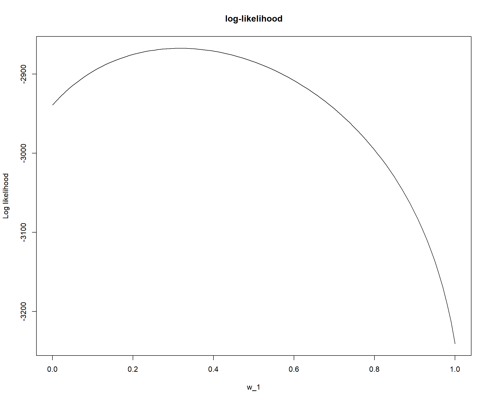
# zoom in
plot(vec_w1, vec_loglik - max(vec_loglik),
ylim = c(-10, 0), type = "l", main = "log-likelihood",
xlab = "w_1", ylab = "Log likelihood")
abline(v = 0.25, col = "red")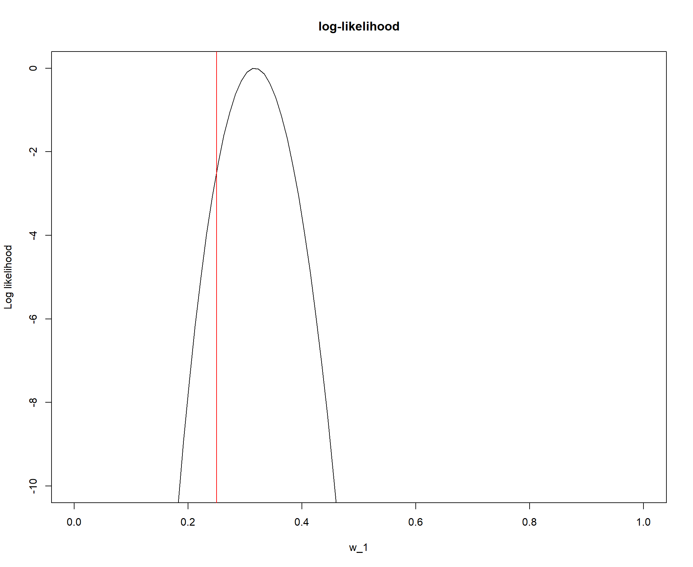
It is not exactly maximized at 0.25 but still close enough.
Reread https://stephens999.github.io/fiveMinuteStats/em_algorithm_01.html
# Input
#' @param L likelihood matrix
#' @param k number of components
#' @param pi_init initial values for pi, length of k
general_em <- function(L, pi_init, niter = 100) {
n = dim(L)[1] # number of data
k = dim(L)[2] # number of components or populations
mat_pi = matrix(nrow = niter + 1, ncol = k)
mat_pi[1, ] = pi_init # set initial pi
# print(head(mat_pi))
w = matrix(nrow = n, ncol = k)
for (i in 1:niter) {
# print(i) calculate likelihood
# * prior
for (j in 1:n) {
w[j, ] = mat_pi[i, ] * L[j, ]
}
w_norm = t(apply(w, 1, function(x) x/sum(x))) # calculate posterior by normalizing by row
# get pi vector by averaging
# posterior for each population
mat_pi[i + 1, ] <- apply(w_norm,
2, mean)
# print(mat_pi[i+1,])
}
return(mat_pi)
}
# Let's see if we did a good job by
# comparing with simple_em
# example from
# https://stephens999.github.io/fiveMinuteStats/em_algorithm_01.html
n = 1000 # number of samples
x = rep(0, n) # to store the samples
shape = c(2, 2) # shapes of the two components
scale = c(0.5, 1) # scales of the two components
for (i in 1:n) {
if (runif(1) < 0.7)
z = 1 else z = 2
x[i] = rgamma(1, scale = scale[z], shape = shape[z])
}
mix_loglik = function(pi1, x) {
sum(log(pi1 * dgamma(x, scale = 0.5,
shape = 2) + (1 - pi1) * dgamma(x,
scale = 1, shape = 2)))
}
pi1_vec = seq(0, 1, length = 100)
loglik = rep(0, 100)
for (i in 1:length(pi1_vec)) {
loglik[i] = mix_loglik(pi1_vec[i], x)
}
niter = 100
pi1.init = 0.5
n = length(x)
pi1 = rep(0, niter + 1)
pi1[1] = pi1.init
L = matrix(nrow = n, ncol = 2)
L[, 1] = dgamma(x, scale = 0.5, shape = 2)
L[, 2] = dgamma(x, scale = 1, shape = 2)
## try with simple_em
simple_em = function(x, pi1.init = 0.5, niter = 100) {
n = length(x)
pi1 = rep(0, niter + 1)
pi1[1] = pi1.init
L = matrix(nrow = n, ncol = 2)
L[, 1] = dgamma(x, scale = 0.5, shape = 2)
L[, 2] = dgamma(x, scale = 1, shape = 2)
w = matrix(nrow = n, ncol = 2)
for (iter in 1:niter) {
w[, 1] = pi1[iter] * L[, 1]
w[, 2] = (1 - pi1[iter]) * L[, 2]
for (i in 1:n) {
# normalize the rows of w
# to sum to 1
w[i, ] = w[i, ]/(w[i, 1] + w[i,
2])
}
pi1[iter + 1] = mean(w[, 1])
}
return(pi1)
}
pi1.iter = simple_em(x)
plot(pi1.iter, xlab = "iteration", ylab = "pi1",
type = "b", col = "blue", main = "simple_em")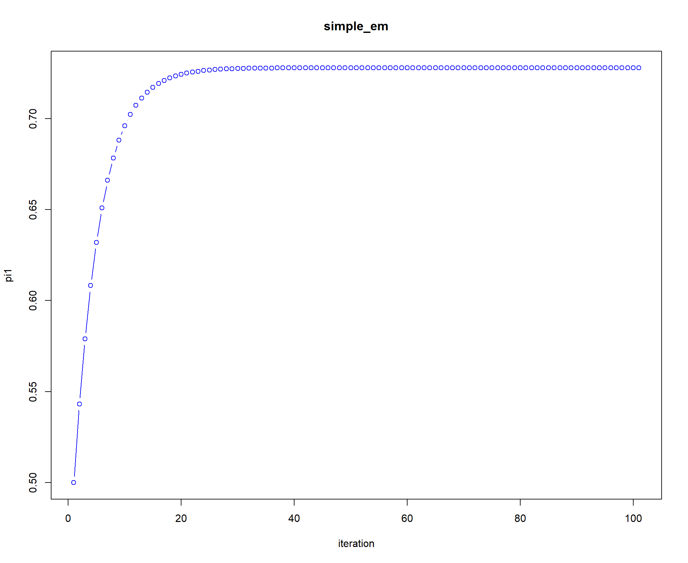
## try with general_em
pi.iter = general_em(L, c(0.5, 0.5), niter = 100)
plot(pi.iter[, 1], xlab = "iteration", ylab = "pi1",
col = "red", type = "b", lty = 1, pch = 19,
lwd = 1, main = "general_em")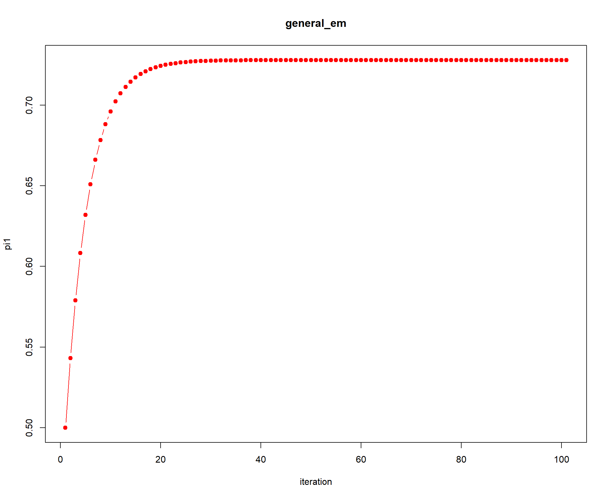
# legend('bottomright',
# legend=c('simple_em', 'general_em'),
# col=c('Blue', 'Red'), lty=1, cex=0.8,
# box.lty=0)Test your algorithm by applying it to genetic mixture data simulated as in B. Do at least 2 simulated data sets, one with more than 2 mixture components. Check that the log-likelihood is increasing each iteration and compare your estimated mixture proportions with the truth. Check whether you get the same answer from different starting points.
(1-1) Compare the estimated mixture proportions with the truth
# Genetic mixture data simulated in B
# Input
N = 1000 # number of tusks to simulate
M = 6 # number of markers
K = 2 # number of components
mat_F = rbind(c(0.4, 0.12, 0.21, 0.12, 0.02,
0.32), c(0.8, 0.2, 0.11, 0.17, 0.23,
0.25)) # K by M matrix, F, of allele frequencies
# simulate data
output_list <- simulate_data(N = N, vec_w = vec_w,
M = M, mat_F = mat_F)
X <- output_list$Simulated_data
# Now calculated likelihood under each
# model loop thru whole dataset and
# multiply to get likelihood
L = matrix(NA, nrow = N, ncol = K)
for (i in 1:dim(X)[1]) {
# get likelihood of one simulation
for (j in 1:K) {
# print(j)
L[i, j] = likelihood_under_model(mat_F[j,
], X[i, ]) # calculate likelihood under each model
# print(L[i,])
}
}
dim(L)[1] 1000 2## EM
pi_iteration <- general_em(L, c(0.5, 0.5),
niter = 100)
# plot and compare with true component
# proportion value
plot(pi_iteration[, 1], xlab = "iteration",
ylab = "Component proportion", col = "red",
type = "b", lty = 1, pch = 19, lwd = 1,
main = "EM on genetic mixture data",
ylim = c(0, 1))
lines(pi_iteration[, 2], col = "blue", type = "b",
lty = 1, pch = 19, lwd = 1)
abline(h = 0.25, col = "red", lty = 3, lwd = 2)
abline(h = 0.75, col = "blue", lty = 3, lwd = 2)
legend("bottomright", legend = c("Savannah",
"Forest", "Truth"), col = c("Red", "Blue",
"Black"), lty = c(1, 1, 3), cex = 0.8,
box.lty = 0)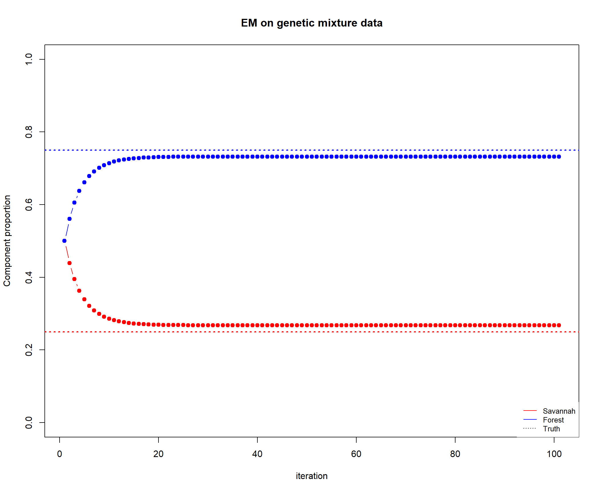
tail(pi_iteration, 1) # this is the EM estimated proportion value [,1] [,2]
[101,] 0.2677262 0.7322738Truth was pi1 = 0.25, pi2 = 0.75. The EM estimate is close to 0.25 but not exactly 0.25.
(1-2) Compare with different starting point
## EM
pi_iteration_0.1 <- general_em(L, c(0.1,
0.9), niter = 100)
pi_iteration_0.2 <- general_em(L, c(0.2,
0.8), niter = 100)
pi_iteration_0.3 <- general_em(L, c(0.3,
0.7), niter = 100)
pi_iteration_0.4 <- general_em(L, c(0.4,
0.6), niter = 100)
pi_iteration_0.5 <- general_em(L, c(0.5,
0.5), niter = 100)
# plot and compare with true component
# proportion value
plot(pi_iteration_0.1[, 1], xlab = "iteration",
ylab = "pi 1", col = "red", type = "l",
lty = 1, pch = 19, lwd = 2, main = "EM with different initial pi 1",
ylim = c(0, 1))
lines(pi_iteration_0.2[, 1], col = "orange",
type = "l", lty = 1, pch = 19, lwd = 2)
lines(pi_iteration_0.3[, 1], col = "green",
type = "l", lty = 1, pch = 19, lwd = 2)
lines(pi_iteration_0.4[, 1], col = "blue",
type = "l", lty = 1, pch = 19, lwd = 2)
lines(pi_iteration_0.5[, 1], col = "purple",
type = "l", lty = 1, pch = 19, lwd = 2)
legend(60, 0.8, legend = c("init_pi1=0.1",
"init_pi1=0.2", "init_pi1=0.3", "init_pi1=0.4",
"init_pi1=0.5"), col = c("red", "orange",
"green", "blue", "purple"), lty = 1,
cex = 0.6, box.lty = 0)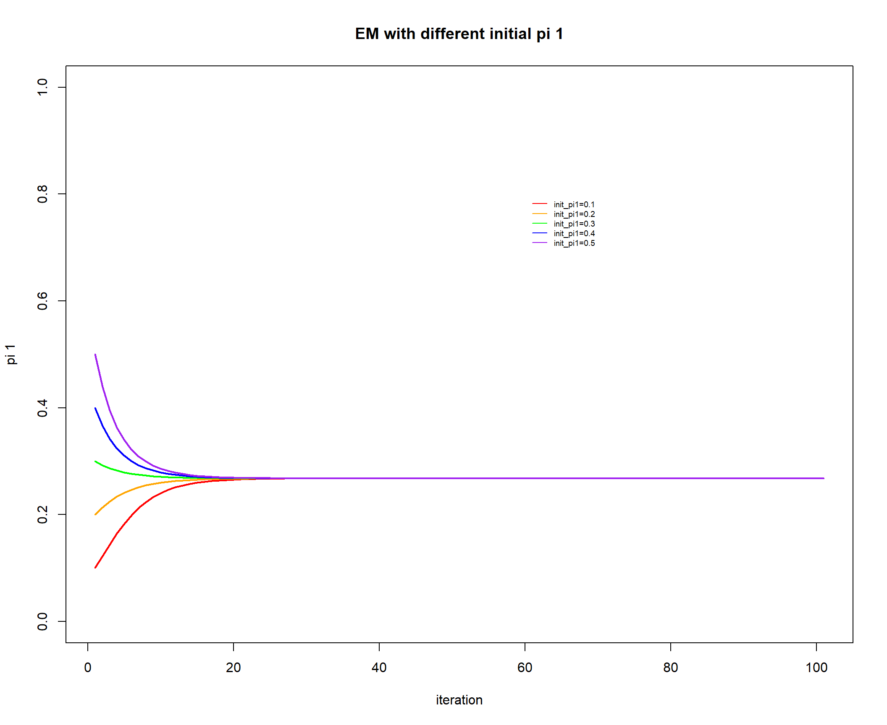 Different starting pi_1 all converges to the same pi_1.
(1-3) Check log-likelihood is increasing: True
## Track log-likelihood changes
niter = 100
vec_ll = rep(Inf, niter) # log likelihood vector
for (i in 1:dim(pi_iteration)[1]) {
# print(i)
log_likelihood = 0
for (j in 1:dim(L)[1]) {
# print(j) get likelihood of
# one simulation
likelihood_each_simulation = sum(pi_iteration[i,
] * L[j, ])
# print(likelihood_each_simulation)
log_likelihood = log_likelihood +
log(likelihood_each_simulation)
}
# print(log_likelihood)
vec_ll[i] = log_likelihood
}
# plot the change of log-likelihood
plot(vec_ll, xlab = "iteration", ylab = "Log-likelihood",
col = "maroon", type = "b", lty = 1,
pch = 19, lwd = 1, main = "Log-likelihood change during EM")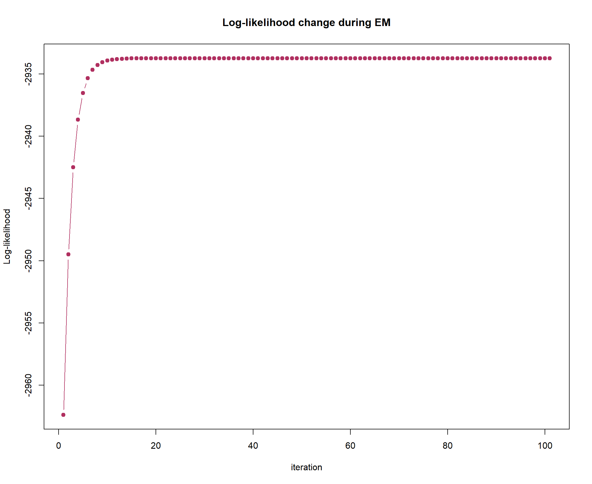
Adding third component: island tusks
(1-1) Compare the estimated mixture proportions with the truth
# Genetic mixture data with 3
# components
# Input
N = 1000 # number of tusks to simulate
M = 6 # number of markers
K = 3 # number of components
mat_F = rbind(c(0.4, 0.12, 0.21, 0.12, 0.02,
0.32), c(0.8, 0.2, 0.11, 0.17, 0.23,
0.25), c(0.2, 0.3, 0.8, 0.9, 0.7, 0.4)) # K by M matrix, F, of allele frequencies
vec_w = c(0.6, 0.3, 0.1)
# simulate data
output_list <- simulate_data(N = N, vec_w = vec_w,
M = M, mat_F = mat_F)
X <- output_list$Simulated_data
dim(X)[1] 1000 6# Now calculated likelihood under each
# model loop thru whole dataset and
# multiply to get likelihood
L = matrix(NA, nrow = N, ncol = K)
dim(L)[1] 1000 3for (i in 1:dim(X)[1]) {
# get likelihood of one simulation
for (j in 1:K) {
# print(j)
L[i, j] = likelihood_under_model(mat_F[j,
], X[i, ]) # calculate likelihood under each model
# print(L[i,])
}
}
## EM
pi_iteration <- general_em(L, pi_init = c(0.4,
0.3, 0.3), niter = 100)
# plot and compare with true component
# proportion value
plot(pi_iteration[, 1], xlab = "iteration",
ylab = "Component proportion", col = "red",
type = "b", lty = 1, pch = 19, lwd = 1,
main = "EM on genetic mixture data",
ylim = c(0, 1))
lines(pi_iteration[, 2], col = "blue", type = "b",
lty = 1, pch = 19, lwd = 1)
lines(pi_iteration[, 3], col = "purple",
type = "b", lty = 1, pch = 19, lwd = 1)
abline(h = 0.6, col = "red", lty = 3, lwd = 2)
abline(h = 0.3, col = "blue", lty = 3, lwd = 2)
abline(h = 0.1, col = "purple", lty = 3,
lwd = 2)
legend("bottomright", legend = c("Savannah",
"Forest", "Island", "Truth"), col = c("Red",
"Blue", "Purple", "Black"), lty = c(1,
1, 1, 3), cex = 0.8, box.lty = 0)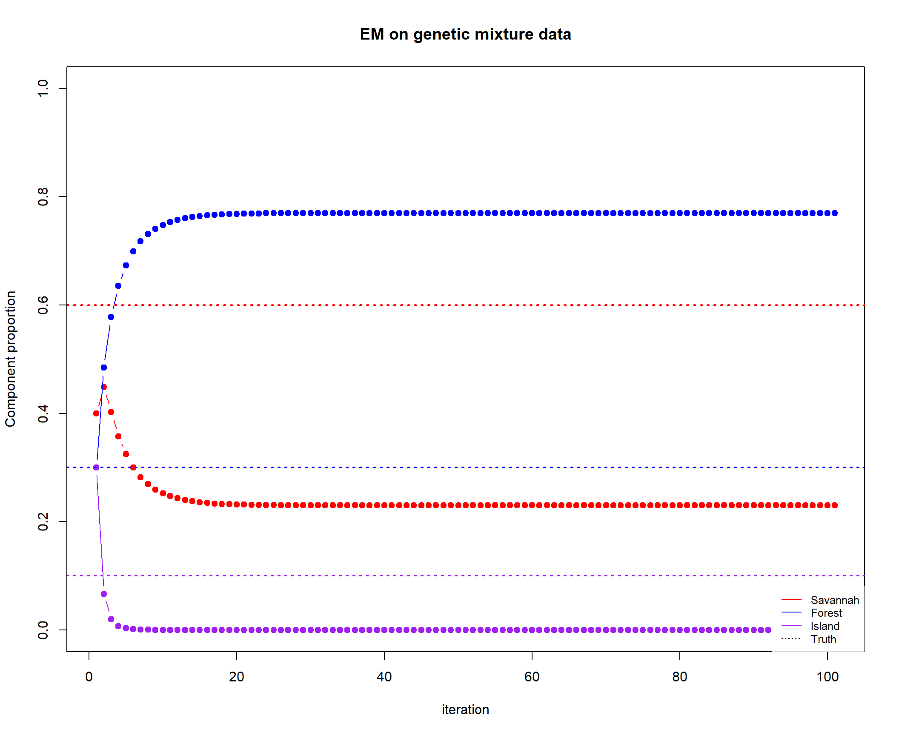
tail(pi_iteration, 1) # this is the EM estimated proportion value [,1] [,2] [,3]
[101,] 0.2300216 0.7699784 1.424474e-35Truth was c(0.6, 0.3, 0.1). The EM estimate is far from the true mixture component proportion.
(1-2) Compare with different starting point
## EM
pi_iteration_0.1 <- general_em(L, c(0.1,
0.2, 0.7), niter = 100)
pi_iteration_0.3 <- general_em(L, c(0.3,
0.4, 0.3), niter = 100)
pi_iteration_0.5 <- general_em(L, c(0.5,
0.2, 0.3), niter = 100)
pi_iteration_0.6 <- general_em(L, c(0.6,
0.2, 0.2), niter = 100)
pi_iteration_0.7 <- general_em(L, c(0.7,
0.1, 0.2), niter = 100)
# plot and compare with true component
# proportion value
plot(pi_iteration_0.1[, 1], xlab = "iteration",
ylab = "pi 1", col = "red", type = "l",
lty = 1, pch = 19, lwd = 2, main = "EM with different initial pi 1",
ylim = c(0, 1))
lines(pi_iteration_0.3[, 1], col = "orange",
type = "l", lty = 1, pch = 19, lwd = 2)
lines(pi_iteration_0.5[, 1], col = "green",
type = "l", lty = 1, pch = 19, lwd = 2)
lines(pi_iteration_0.6[, 1], col = "blue",
type = "l", lty = 1, pch = 19, lwd = 2)
lines(pi_iteration_0.7[, 1], col = "purple",
type = "l", lty = 1, pch = 19, lwd = 2)
abline(h = 0.6, col = "black", lty = 2, pch = 19,
lwd = 1)
legend(60, 0.9, legend = c("init_pi1=0.1",
"init_pi1=0.3", "init_pi1=0.5", "init_pi1=0.6",
"init_pi1=0.7", "truth"), col = c("red",
"orange", "green", "blue", "purple",
"black"), lty = c(rep(1, 5), 2), cex = 0.6,
box.lty = 0)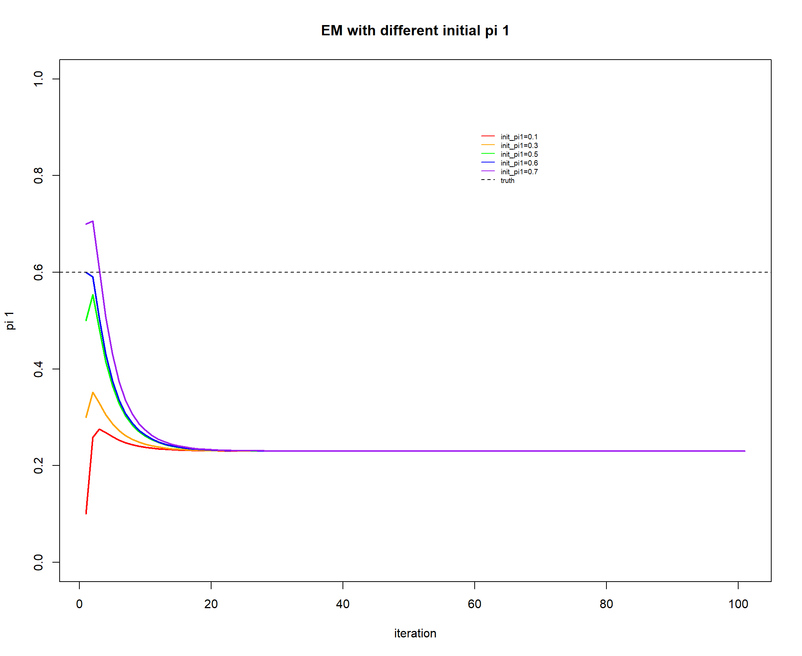 Different starting pi_1 all converges to the same pi_1. However, the converged pi_1 is far from truth.
(1-3) Check log-likelihood is increasing: True
## Track log-likelihood changes
niter = 100
vec_ll = rep(Inf, niter) # log likelihood vector
for (i in 1:dim(pi_iteration)[1]) {
# print(i)
log_likelihood = 0
for (j in 1:dim(L)[1]) {
# print(j) get likelihood of
# one simulation
likelihood_each_simulation = sum(pi_iteration[i,
] * L[j, ])
# print(likelihood_each_simulation)
log_likelihood = log_likelihood +
log(likelihood_each_simulation)
}
# print(log_likelihood)
vec_ll[i] = log_likelihood
}
# plot the change of log-likelihood
plot(vec_ll, xlab = "iteration", ylab = "Log-likelihood",
col = "maroon", type = "b", lty = 1,
pch = 19, lwd = 1, main = "Log-likelihood change during EM")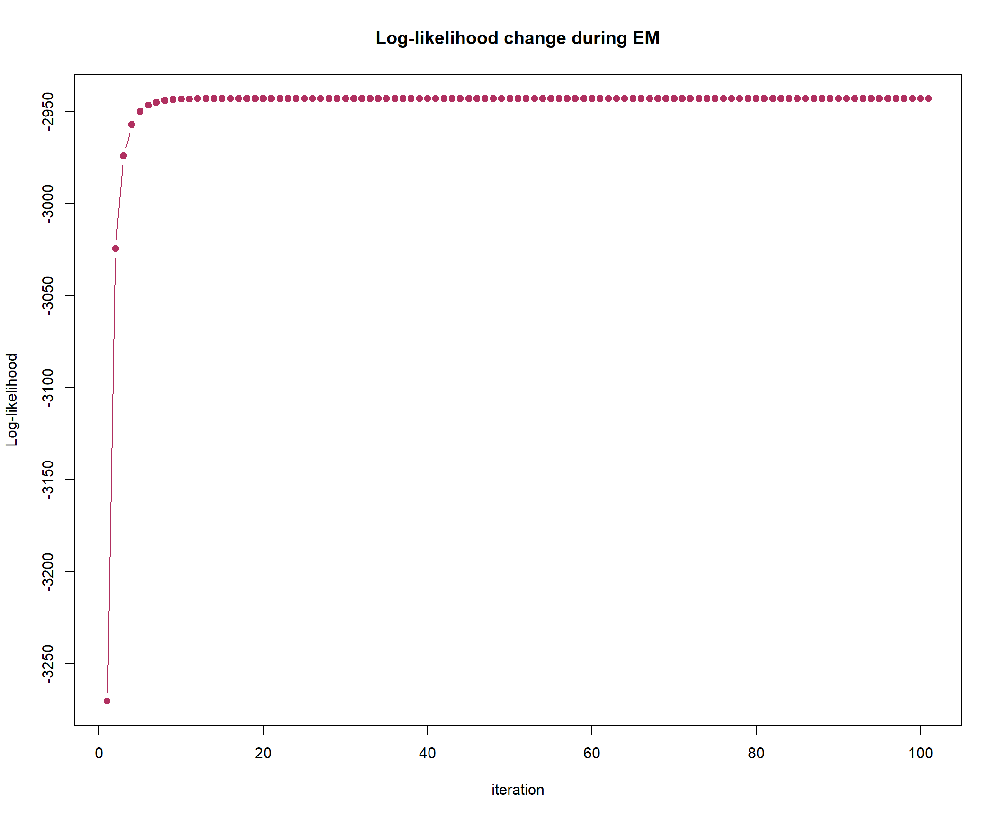
sessionInfo()R version 4.0.3 (2020-10-10)
Platform: x86_64-w64-mingw32/x64 (64-bit)
Running under: Windows 10 x64 (build 19042)
Matrix products: default
locale:
[1] LC_COLLATE=English_United States.1252
[2] LC_CTYPE=English_United States.1252
[3] LC_MONETARY=English_United States.1252
[4] LC_NUMERIC=C
[5] LC_TIME=English_United States.1252
attached base packages:
[1] stats graphics grDevices utils datasets methods base
other attached packages:
[1] pracma_2.3.3 rmarkdown_2.9 ggpubr_0.4.0 ggrepel_0.9.1
[5] ape_5.5 openxlsx_4.2.3 devtools_2.4.0 usethis_2.0.1
[9] gtools_3.8.2 reshape2_1.4.4 readxl_1.3.1 magrittr_2.0.1
[13] forcats_0.5.1 stringr_1.4.0 purrr_0.3.4 readr_1.4.0
[17] tidyr_1.1.3 tibble_3.0.4 tidyverse_1.3.1 vegan_2.5-7
[21] lattice_0.20-41 permute_0.9-5 RColorBrewer_1.1-2 ggplot2_3.3.5
[25] dplyr_1.0.5 knitr_1.37
loaded via a namespace (and not attached):
[1] colorspace_2.0-0 ggsignif_0.6.2 ellipsis_0.3.2 rio_0.5.27
[5] rprojroot_2.0.2 fs_1.5.0 rstudioapi_0.13 remotes_2.4.0
[9] fansi_0.4.2 lubridate_1.7.10 xml2_1.3.2 splines_4.0.3
[13] cachem_1.0.4 pkgload_1.2.1 jsonlite_1.7.2 workflowr_1.6.2
[17] broom_0.7.9 cluster_2.1.0 dbplyr_2.1.1 compiler_4.0.3
[21] httr_1.4.2 backports_1.2.1 assertthat_0.2.1 Matrix_1.2-18
[25] fastmap_1.1.0 cli_3.0.1 formatR_1.11 later_1.2.0
[29] htmltools_0.5.1.1 prettyunits_1.1.1 tools_4.0.3 gtable_0.3.0
[33] glue_1.4.2 Rcpp_1.0.5 carData_3.0-4 cellranger_1.1.0
[37] jquerylib_0.1.4 vctrs_0.3.8 nlme_3.1-149 xfun_0.29
[41] ps_1.6.0 testthat_3.0.2 rvest_1.0.1 lifecycle_1.0.0
[45] rstatix_0.7.0 MASS_7.3-53 scales_1.1.1 hms_1.1.0
[49] promises_1.2.0.1 parallel_4.0.3 yaml_2.2.1 curl_4.3.2
[53] memoise_2.0.0 sass_0.4.0 stringi_1.5.3 highr_0.9
[57] desc_1.3.0 pkgbuild_1.2.0 zip_2.1.1 rlang_0.4.10
[61] pkgconfig_2.0.3 evaluate_0.14 tidyselect_1.1.1 processx_3.5.1
[65] plyr_1.8.6 R6_2.5.0 generics_0.1.0 DBI_1.1.1
[69] pillar_1.6.0 haven_2.4.1 whisker_0.4 foreign_0.8-80
[73] withr_2.4.2 mgcv_1.8-33 abind_1.4-5 modelr_0.1.8
[77] crayon_1.4.1 car_3.0-11 utf8_1.1.4 grid_4.0.3
[81] data.table_1.14.0 callr_3.7.0 git2r_0.28.0 reprex_2.0.0
[85] digest_0.6.27 httpuv_1.6.0 munsell_0.5.0 bslib_0.2.5.1
[89] sessioninfo_1.1.1This site was created with R Markdown